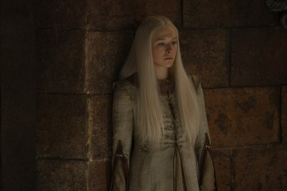

Rhaenyra Targaryen
Perde a filha Visenya, é coroada em Pedra do Dragão e recebe a notícia da morte de Lucerys.
Conteúdo até a temporada 1, episódio 10.
Ver Mapa de Conexões →Temporada 1
Acompanhe os acontecimentos registrados até o episódio escolhido.
Episódio 01 — The Heirs of the Dragon
Filha de Viserys e Aemma, cavaleira de Syrax. É nomeada herdeira após as perdas na família real.
Episódio 02 — The Rogue Prince
Daemon toma um ovo de dragão e anuncia um casamento com Mysaria. Rhaenyra chega em Syrax e recupera o ovo sem combate.
Episódio 03 — Second of His Name
Rhaenyra se afasta da comitiva com Criston. Os dois enfrentam um javali; depois, ela poupa um cervo branco.
Episódio 04 — King of the Narrow Sea
Daemon leva Rhaenyra às ruas e a uma casa de prazer. Após ele deixá-la, ela retorna ao castelo e passa a noite com Criston.
Episódio 05 — We Light the Way
Casa-se com Laenor Velaryon após negociar com ele um acordo sobre suas vidas privadas.
Episódio 06 — The Princess and the Queen
Mãe de Jacaerys, Lucerys e Joffrey. Deixa Porto Real rumo a Pedra do Dragão diante da hostilidade da corte.
Episódio 07 — Driftmark
Casa-se com Daemon depois da fuga secreta de Laenor.
Episódio 08 — The Lord of the Tides
Com Corlys gravemente ferido, Vaemond contesta a posição de Lucerys. Rhaenyra procura o apoio de Rhaenys e propõe uniões entre seus filhos e as netas dela.
Episódio 10 — The Black Queen
Perde a filha Visenya, é coroada em Pedra do Dragão e recebe a notícia da morte de Lucerys.
Personagens relacionados
- Viserys I TargaryenPai e filha
- Aemma ArrynMãe e filha
- Alicent HightowerAmigas de infância
- Criston ColeEncontro íntimo
- Laenor VelaryonCasamento dinástico
- Harwin StrongPaternidade suspeitada pela corte
- Daemon TargaryenCasados
- Rhaenys TargaryenApoio à sucessão de Derivamarca
- Jacaerys VelaryonMãe e filho
- Lucerys VelaryonMãe e filho
- Joffrey VelaryonMãe e filho
- SyraxCavaleira / dragão
- Harrold WesterlingProteção da princesa
- Erryk CargyllJuramento de lealdade
- Lyman BeesburyDefesa da sucessão
- Aegon Targaryen (filho de Rhaenyra)Filho / mãe
- Viserys Targaryen (filho de Rhaenyra)Filho / mãe
- Visenya TargaryenFilha / mãe
- Baelon TargaryenIrmãos
- Boremund BaratheonRecepção em Ponta Tempestade